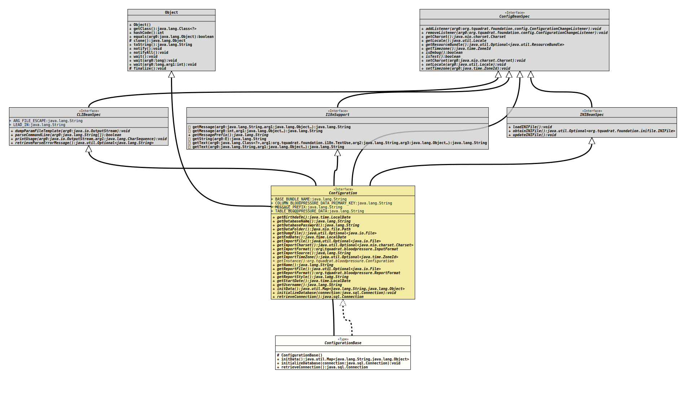

Module org.tquadrat.bloodpressure
Class ConfigurationBase
java.lang.Object
org.tquadrat.bloodpressure.internal.ConfigurationBase
- All Implemented Interfaces:
Configuration,org.tquadrat.foundation.config.CLIBeanSpec,org.tquadrat.foundation.config.ConfigBeanSpec,org.tquadrat.foundation.config.I18nSupport,org.tquadrat.foundation.config.INIBeanSpec
@ClassVersion(sourceVersion="$Id: ConfigurationBase.java 122 2022-02-12 20:09:13Z tquadrat $")
@API(status=STABLE,
since="0.0.1")
public abstract class ConfigurationBase
extends Object
implements Configuration
The base class for the configuration bean.
- Author:
- Thomas Thrien (thomas.thrien@tquadrat.org)
- Version:
- $Id: ConfigurationBase.java 122 2022-02-12 20:09:13Z tquadrat $
- Since:
- 0.0.1
- UML Diagram
-

UML Diagram for "org.tquadrat.bloodpressure.internal.ConfigurationBase"
{kind=link}
-
Field Summary
Fields inherited from interface org.tquadrat.foundation.config.CLIBeanSpec
ARG_FILE_ESCAPE, LEAD_INFields inherited from interface org.tquadrat.bloodpressure.Configuration
BASE_BUNDLE_NAME, COLUMN_BLOODPRESSURE_DATA_PRIMARY_KEY, MESSAGE_PREFIX, TABLE_BLOODPRESSURE_DATA -
Constructor Summary
ConstructorsModifierConstructorDescriptionprotectedCreates a new instance ofConfigurationBase. -
Method Summary
Modifier and TypeMethodDescriptioninitData()Initialises the configuration bean.final voidinitializeDatabase(Connection connection) In case a new database was created, a call to this method will initialise it.final ConnectionRetrieves the connection to the database.Methods inherited from class java.lang.Object
clone, equals, finalize, getClass, hashCode, notify, notifyAll, toString, wait, wait, waitMethods inherited from interface org.tquadrat.foundation.config.CLIBeanSpec
dumpParamFileTemplate, parseCommandLine, printUsage, retrieveParseErrorMessageMethods inherited from interface org.tquadrat.foundation.config.ConfigBeanSpec
addListener, getCharset, getLocale, getResourceBundle, getTimezone, isDebug, isTest, removeListener, setCharset, setLocale, setTimezoneMethods inherited from interface org.tquadrat.bloodpressure.Configuration
getBirthdate, getClock, getDatabaseName, getDatabasePassword, getDataFolder, getDumpFile, getEndDate, getImportCharset, getImportFile, getImportFormat, getImportSource, getImportTimeZone, getName, getReportFile, getReportFormat, getReportStyle, getStartDate, getUsername, setClockMethods inherited from interface org.tquadrat.foundation.config.I18nSupport
getMessage, getMessage, getMessagePrefix, getString, getText, getTextMethods inherited from interface org.tquadrat.foundation.config.INIBeanSpec
loadINIFile, obtainINIFile, updateINIFile
-
Constructor Details
-
ConfigurationBase
protected ConfigurationBase()Creates a new instance ofConfigurationBase.
-
-
Method Details
-
initData
Initialises the configuration bean.- Specified by:
initDatain interfaceConfiguration- Returns:
- The initialisation data.
-
initializeDatabase
In case a new database was created, a call to this method will initialise it.- Specified by:
initializeDatabasein interfaceConfiguration- Parameters:
connection- The database connection.- Throws:
SQLException- The initialisation of the database failed.
-
retrieveConnection
Retrieves the connection to the database.- Specified by:
retrieveConnectionin interfaceConfiguration- Returns:
- The connection to the database.
- Throws:
SQLException- There is a problem with retrieving the database connection.
-